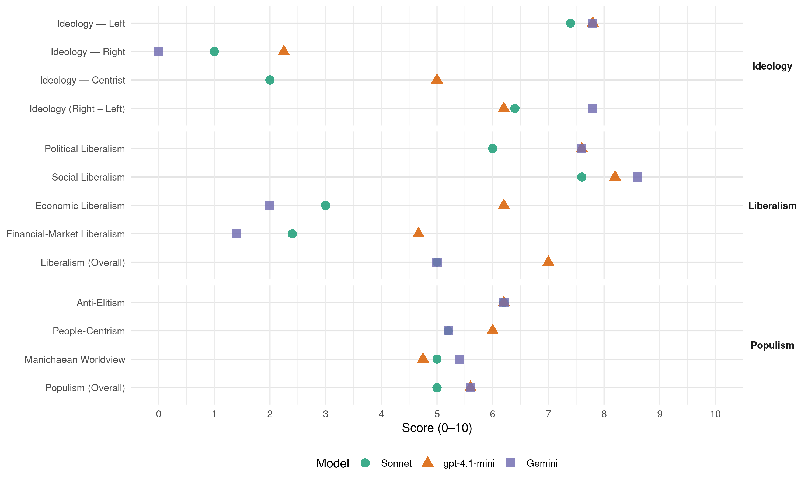

BE (Portugal, 2022)
manifesto_id 35211_202201
Get full text: This site shows derived annotations and short verbatim quotes only. The full manifesto text is © Manifesto Project / WZB — obtain it via manifesto-project.wzb.eu using the manifesto_id above.
Headline scores
| Dimension | Sonnet | gpt-4.1-mini | Gemini |
|---|---|---|---|
| Populism (Overall) | 5.0 | 5.6 | 5.6 |
| Anti-Elitism | 6.2 | 6.2 | 6.2 |
| People-Centrism | 5.2 | 6.0 | 5.2 |
| Manichaean Worldview | 5.0 | 4.8 | 5.4 |
| Ideology (Right − Left) | 6.4 | 6.2 | 7.8 |
| Liberalism (Overall) | 5.0 | 7.0 | 5.0 |
| Political Liberalism | 6.0 | 7.6 | 7.6 |
| Social Liberalism | 7.6 | 8.2 | 8.6 |
| Economic Liberalism | 3.0 | 6.2 | 2.0 |
| Financial-Market Liberalism | 2.4 | 4.7 | 1.4 |
Evidence per dimension
Economic Liberalism
Gemini · score 2.0 · verified · chunk 1
“Renacionalização da EDP e da GALP”
10.2.3.REN 10.3.Renacionalização da EDP e da GALP, objetivos de soberania económica 10.4.Participação democrática dos trabalhadores nas empresas
Gemini · score 2.0 · verified · chunk 2
“Definição de margens máximas de intermediação”
contratos de abastecimento de produtos agroalimentares e do compromisso de que o preço de venda lhe é sempre superior; Definição de margens máximas de intermediação dos produtos agroalimentares.
Gemini · score 2.0 · verified · chunk 3
“Nacionalização das ações”
As propostas do Bloco Nacionalização das ações representativas do capital social
Gemini · score 2.0 · verified · chunk 4
“reversão de algumas medidas da direita”
pela agenda neoliberal e pela escassez de recursos. Concluída a reversão de algumas medidas da direita, o governo do PS resistiu
Gemini · score 2.0 · verified · chunk 5
“eliminação das regras do mercado interno”
decisões soberanas sobre o sistema financeiro, incluindo processos de nacionalização, recapitalização, resgate, resolução ou venda; Eliminação das regras do mercado interno que condicionam a possibilidade
gpt-4.1-mini · score 4.0 · verified · chunk 1
“Recuperação do salário mínimo que, tendo alcançado 705 euros em janeiro de 2022, deve continuar a aumentar”
Recuperação do salário mínimo que, tendo alcançado 705 euros em janeiro de 2022, deve continuar a aumentar ao longo da legislatura a um ritmo anual de, pelo menos, 10%, de forma a diminuir a diferença em relação ao SMN de Espanha; Reversão da “flexibilização” do trabalho suplementar, acompanhada desde 2012 pela redução para metade da sua remuneração.
gpt-4.1-mini · score 7.0 · verified · chunk 2
“Reforço das prestações de desemprego, designadamente: i)retomando o salário mínimo nacional como referência”
…Reforço das prestações de desemprego, designadamente: i)retomando o salário mínimo nacional como referência do valor mínimo do subsídio de desemprego contributivo…
gpt-4.1-mini · score 7.0 · verified · chunk 3
“mercado, competição, privatização, tributação progressiva”
Introdução do englobamento obrigatório dos rendimentos em IRS, acabando com a dualidade em que só os rendimentos do trabalho e pensões são taxados de forma progressiva, ficando os restantes sujeitos a taxas planas que no caso dos rendimentos prediais e de capitais são de 28%.
gpt-4.1-mini · score 6.0 · verified · chunk 4
“política orçamental de modo a cumprirem os objetivos fundamentais da democracia”
os Estados devem poder gerir a sua política orçamental de modo a cumprirem os objetivos fundamentais da democracia: responder perante os seus cidadãos no combate ao desemprego, na promoção de investimento que organize a transição climática, a reconversão da indústria e transportes, ou os serviços públicos em saúde e habitação, entre outros.
gpt-4.1-mini · score 7.0 · verified · chunk 5
“defesa da neutralidade da internet, por uma internet enquanto um espaço liberdade”
Posicionamo-nos do lado da defesa dos direitos digitais, contra a introdução da censura neste espaço de liberdade, e não em oposição aos direitos autorais. De facto, uma verdadeira e justa defesa destes direitos, que também defendemos e respeitamos, não fica acautelada por normas como a do referido artigo 13.º, que visam unicamente proteger e beneficiar a grande indústria editorial. Continuaremos a bater-nos pela defesa da neutralidade da internet, por uma internet enquanto um espaço liberdade e ao qual todos e todas possam aceder de forma igual.
Sonnet · score 2.0 · verified · chunk 1
“Renacionalização da EDP e da GALP”
10.3.Renacionalização da EDP e da GALP, objetivos de soberania económica
Sonnet · score 3.0 · verified · chunk 2
“sucessivas vagas de privatizações promoveram a concentração de riqueza”
As sucessivas vagas de privatizações promoveram a concentração de riqueza e retiraram ao país o uso de bens comuns essenciais ao seu desenvolvimento económico e produtivo
Sonnet · score 3.0 · verified · chunk 3
“rendimentos de capital e os altos rendimentos foram protegidos”
O sistema de tributação contribuiu decisivamente para aumentar as desigualdades no país ao transferir para o trabalho e para o consumo de bens essenciais o peso a carga fiscal. Enquanto isso, os rendimentos de capital e os altos rendimentos foram protegidos, e até favorecidos, com benefícios fiscais
Sonnet · score 3.0 · verified · chunk 4
“agenda neoliberal e pela escassez de recursos”
O sistema educativo em Portugal tornou-se numa manta de retalhos, avulsa e incoerente, marcado pela agenda neoliberal e pela escassez de recursos
Sonnet · score 4.0 · verified · chunk 5
“Eliminação das regras do mercado interno”
Eliminação das regras do mercado interno que condicionam a possibilidade de decisões soberanas sobre política industrial dos Estados-membros
Financial-Market Liberalism
Gemini · score 1.0 · verified · chunk 1
“Uma banca pública estratégica”
10.RECUPERAR O CONTROLE DE SETORES LUCRATIVOS E ESTRATÉGICOS 10.1.Uma banca pública estratégica 10.2.Um programa para a legislatura
Gemini · score 2.0 · verified · chunk 2
“abusos dos grandes fundos financeiros”
controle do valor das rendas e a proteção dos moradores face à especulação e os abusos dos grandes fundos financeiros. Defendemos propostas de equidade fiscal
Gemini · score 2.0 · verified · chunk 3
“controlo público do sistema bancário”
o Bloco de Esquerda defende o controlo público do sistema bancário e a sua recuperação
Gemini · score 1.0 · verified · chunk 4
“Tributação das operações com criptoativos”
Criação de um sistema de reporte obrigatório dos montantes detidos em criptomoedas… Tributação das operações com criptoativos, nomeadamente das suas mais-valias
Gemini · score 1.0 · verified · chunk 5
“recusa da União Bancária, de modo a”
desvinculação do Tratado Orçamental e a recusa da União Bancária, de modo a retomar a capacidade de decisão autónoma sobre investimento e
gpt-4.1-mini · score 3.0 · verified · chunk 1
“Uma banca pública estratégica”
10.RECUPERAR O CONTROLE DE SETORES LUCRATIVOS E ESTRATÉGICOS 10.1.Uma banca pública estratégica 10.2.Um programa para a legislatura 10.2.1.ANA 10.2.2.CTT 10.2.3.REN 10.3.Renacionalização da EDP e da GALP, objetivos de soberania económica 10.4.Participação democrática dos trabalhadores nas empresas
gpt-4.1-mini · score 6.0 · verified · chunk 3
“Fundo de Resolução, contribuições obrigatórias das instituições financeiras”
O Fundo de Resolução é financiado através de: i)contribuição periódica criada em 2013, com uma receita de 72 M€ em 2020. ii)contribuição extraordinária sobre o setor bancário, com uma receita de 178 M€ em 2020. Ambas as contribuições, suportadas pelas instituições financeiras em Portugal, constituem receita do Estado.
gpt-4.1-mini · score 5.0 · verified · chunk 4
“sistema financeiro sempre salvo com dinheiros públicos”
os poderes ocultos dos “donos disto tudo” num sistema financeiro sempre salvo com dinheiros públicos, são exemplos que têm saído caros ao país.
Sonnet · score 2.0 · verified · chunk 1
“Uma banca pública estratégica”
10.RECUPERAR O CONTROLE DE SETORES LUCRATIVOS E ESTRATÉGICOS 10.1.Uma banca pública estratégica
Sonnet · score 3.0 · verified · chunk 2
“abusos dos grandes fundos financeiros”
Propomos uma verdadeira política pública de habitação, que inclui a oferta pública de habitação, o controle do valor das rendas e a proteção dos moradores face à especulação e os abusos dos grandes fundos financeiros
Sonnet · score 2.0 · verified · chunk 3
“controlo democrático do sistema financeiro”
A transformação de um modelo económico que alia a financeirização às desigualdades e à destruição ambiental requer o controlo democrático do sistema financeiro. Para isso, a propriedade pública é condição essencial
Sonnet · score 2.0 · verified · chunk 4
“Criminalização do recurso a serviços prestados por entidades situadas em territórios offshore”
Criminalização do recurso a serviços prestados por entidades situadas em territórios offshore; Exclusão do acesso aos apoios públicos e contratação com o Estado a empresas que sejam direta ou indiretamente participadas
Sonnet · score 3.0 · verified · chunk 5
“desvinculação do país do Tratado Orçamental”
O Bloco de Esquerda defende como prioridade a desvinculação do país do Tratado Orçamental e a recusa da União Bancária, de modo a retomar a capacidade de decisão autónoma
Political Liberalism
Gemini · score 7.0 · verified · chunk 1
“serviços públicos e democracia”
11.INVESTIR NA COESÃO TERRITORIAL 11.1.Serviços públicos e democracia 11.2.Regiões Autónomas: solidariedade e democracia
Gemini · score 7.0 · verified · chunk 2
“prévia avaliação no Parlamento”
Subordinação das novas políticas públicas à prévia avaliação no Parlamento do seu previsível impacto, positivo ou negativo
Gemini · score 8.0 · verified · chunk 3
“protege a democracia”
A transparência é a defesa que qualifica e protege a democracia. A exclusividade no mandato
Gemini · score 8.0 · verified · chunk 4
“A transparência é a defesa que qualifica e protege a democracia”
bases da confiança num Estado de Direito. A transparência é a defesa que qualifica e protege a democracia. A exclusividade no mandato
Gemini · score 8.0 · verified · chunk 5
“qualificação das ferramentas de participação cidadã”
passar pela democratização da democracia portuguesa e pela qualificação das ferramentas de participação cidadã. As propostas do Bloco Atribuir o direito
gpt-4.1-mini · score 8.0 · verified · chunk 1
“A democracia não sobrevive sem ele”
A extraordinária resposta que o SNS deu à pandemia deixou claro que a democracia não sobrevive sem ele. Ficou também claro que não podemos contar com o setor privado quando está em causa a proteção da saúde de todos.
gpt-4.1-mini · score 7.0 · verified · chunk 2
“subordinação das novas políticas públicas à prévia avaliação no Parlamento do seu previsível impacto”
…Subordinação das novas políticas públicas à prévia avaliação no Parlamento do seu previsível impacto, positivo ou negativo, sobre a pobreza e a exclusão social…
gpt-4.1-mini · score 8.0 · verified · chunk 3
“democracia, direitos, eleições, tribunais, media”
A Constituição portuguesa estabelece o direito dos trabalhadores das empresas públicas a elegerem diretamente um representante para integrar os conselhos de administração daquelas empresas.
gpt-4.1-mini · score 7.0 · verified · chunk 4
“transparência é a defesa que qualifica e protege a democracia”
A corrupção mina as bases da confiança num Estado de Direito. A transparência é a defesa que qualifica e protege a democracia. A exclusividade no mandato dos deputados é a certeza da verdadeira separação entre interesses públicos e privados no poder legislativo.
gpt-4.1-mini · score 8.0 · verified · chunk 5
“defesa da neutralidade da internet, por uma internet enquanto um espaço liberdade”
Posicionamo-nos do lado da defesa dos direitos digitais, contra a introdução da censura neste espaço de liberdade, e não em oposição aos direitos autorais. De facto, uma verdadeira e justa defesa destes direitos, que também defendemos e respeitamos, não fica acautelada por normas como a do referido artigo 13.º, que visam unicamente proteger e beneficiar a grande indústria editorial. Continuaremos a bater-nos pela defesa da neutralidade da internet, por uma internet enquanto um espaço liberdade e ao qual todos e todas possam aceder de forma igual.
Sonnet · score 6.0 · verified · chunk 1
“escrutínio democrático da aplicação dos fundos”
os mecanismos de transparência e prestação de contas têm que ser reforçados para assegurar o escrutínio democrático da aplicação dos fundos
Sonnet · score 6.0 · verified · chunk 2
“prévia avaliação no Parlamento do seu previsível impacto”
Subordinação das novas políticas públicas à prévia avaliação no Parlamento do seu previsível impacto, positivo ou negativo, sobre a pobreza e a exclusão social
Sonnet · score 5.0 · verified · chunk 3
“A transparência é a defesa que qualifica e protege a democracia”
A corrupção mina as bases da confiança num Estado de Direito. A transparência é a defesa que qualifica e protege a democracia. A exclusividade no mandato dos deputados é a certeza da verdadeira separação
Sonnet · score 6.0 · verified · chunk 4
“termine o regime de pré-avaliação pela Comissão Europeia”
é imperativo, por razões de responsabilidade democrática, que termine o regime de pré-avaliação pela Comissão Europeia das propostas de Orçamento do Estado dos Estados-membros antes da respetiva apreciação parlamentar
Sonnet · score 7.0 · verified · chunk 5
“clareza de um jornalismo sério e rigoroso é fundamental para a salvaguarda da própria democracia”
Num tempo em que os populismos se organizam na sombra das campanhas de desinformação, a clareza de um jornalismo sério e rigoroso é fundamental para a salvaguarda da própria democracia
Liberalism (Overall)
Gemini · score 5.0 · verified · chunk 1
“serviços públicos e democracia”
11.INVESTIR NA COESÃO TERRITORIAL 11.1.Serviços públicos e democracia 11.2.Regiões Autónomas: solidariedade e democracia
Gemini · score 5.0 · verified · chunk 2
“violaçãodos direitos humanos”
permanente, e com um fôlego diferente das que existem. Pobreza: violaçãodos direitos humanos Metade das pessoas em Portugal já viveram
Gemini · score 5.0 · verified · chunk 3
“protege a democracia”
A transparência é a defesa que qualifica e protege a democracia. A exclusividade no mandato
Gemini · score 5.0 · verified · chunk 4
“A transparência é a defesa que qualifica e protege a democracia”
bases da confiança num Estado de Direito. A transparência é a defesa que qualifica e protege a democracia. A exclusividade no mandato
Gemini · score 5.0 · verified · chunk 5
“qualificação das ferramentas de participação cidadã”
passar pela democratização da democracia portuguesa e pela qualificação das ferramentas de participação cidadã. As propostas do Bloco Atribuir o direito
gpt-4.1-mini · score 6.0 · verified · chunk 1
“A democracia não sobrevive sem ele”
A extraordinária resposta que o SNS deu à pandemia deixou claro que a democracia não sobrevive sem ele. Ficou também claro que não podemos contar com o setor privado quando está em causa a proteção da saúde de todos.
gpt-4.1-mini · score 7.0 · verified · chunk 2
“Reforço das prestações de desemprego, designadamente: i)retomando o salário mínimo nacional como referência”
…Reforço das prestações de desemprego, designadamente: i)retomando o salário mínimo nacional como referência do valor mínimo do subsídio de desemprego contributivo…
gpt-4.1-mini · score 7.0 · verified · chunk 3
“Introdução do englobamento obrigatório dos rendimentos em IRS”
Introdução do englobamento obrigatório dos rendimentos em IRS, acabando com a dualidade em que só os rendimentos do trabalho e pensões são taxados de forma progressiva, ficando os restantes sujeitos a taxas planas que no caso dos rendimentos prediais e de capitais são de 28%.
gpt-4.1-mini · score 7.0 · verified · chunk 4
“transparência é a defesa que qualifica e protege a democracia”
A corrupção mina as bases da confiança num Estado de Direito. A transparência é a defesa que qualifica e protege a democracia. A exclusividade no mandato dos deputados é a certeza da verdadeira separação entre interesses públicos e privados no poder legislativo.
gpt-4.1-mini · score 8.0 · verified · chunk 5
“defesa da neutralidade da internet, por uma internet enquanto um espaço liberdade”
Posicionamo-nos do lado da defesa dos direitos digitais, contra a introdução da censura neste espaço de liberdade, e não em oposição aos direitos autorais. De facto, uma verdadeira e justa defesa destes direitos, que também defendemos e respeitamos, não fica acautelada por normas como a do referido artigo 13.º, que visam unicamente proteger e beneficiar a grande indústria editorial. Continuaremos a bater-nos pela defesa da neutralidade da internet, por uma internet enquanto um espaço liberdade e ao qual todos e todas possam aceder de forma igual.
Sonnet · score 5.0 · mixed · chunk 1
“democracia vive diminuída”
sem segurança na saúde a democracia vive diminuída
Sonnet · score 5.0 · mixed · chunk 2
“rendimentos de capital e os altos rendimentos foram protegidos”
os rendimentos de capital e os altos rendimentos foram protegidos, e até favorecidos, com benefícios fiscais e sucessivas reduções das taxas de tributação
Sonnet · score 4.0 · verified · chunk 3
“A transparência é a defesa que qualifica e protege a democracia”
A corrupção mina as bases da confiança num Estado de Direito. A transparência é a defesa que qualifica e protege a democracia.
Sonnet · score 5.0 · verified · chunk 4
“combatemos todas as formas de discriminação”
Enfrentamos o racismo, que destrói a vida social e combatemos todas as formas de discriminação. À política do ódio e desinformação da extrema-direita contrapomos uma cultura de respeito
Sonnet · score 6.0 · verified · chunk 5
“salvaguarda da própria democracia”
a clareza de um jornalismo sério e rigoroso é fundamental para a salvaguarda da própria democracia
Anti-Elitism
Gemini · score 5.0 · verified · chunk 1
“combater a corrupção, o privilégio”
e pelo respeito pelo direito à migração, tanto no quadro nacional como no europeu. Assumimos a recusa do Tratado Orçamental Europeu e das suas regras de imposição de austeridade e defendemos a reestruturação da dívida pública. Combatemos de forma determinada a corrupção, o privilégio e o crime económicos, e propomos um novo quadro legal para a criminalização do recurso a offshores.
Gemini · score 6.0 · verified · chunk 2
“subjugados ao lóbi das indústrias poluentes”
os compromissos necessários para a descarbonização e para o apoio aos países mais pobres continuam subjugados ao lóbi das indústrias poluentes, à hipocrisia do “capitalismo verde”
Gemini · score 7.0 · verified · chunk 3
“abuso patronal”
deixando-os desprotegidos e suscetíveis ao abuso patronal. Para contrariar a situação
Gemini · score 7.0 · verified · chunk 4
“O PS e a direita uniram-se contra as mudanças”
há muito que ficou por fazer. O PS e a direita uniram-se contra as mudanças de fundo de que o país precisava, impedindo
Gemini · score 6.0 · verified · chunk 5
“hipocrisia europeia – portas fechadas à imigração”
21.2.Um novo ciclo de políticas para a imigração Em sintonia com a hipocrisia europeia – portas fechadas à imigração legal, janelas escancaradas às máfias – responsável pela
gpt-4.1-mini · score 7.0 · verified · chunk 1
“Combatemos de forma determinada a corrupção, o privilégio e o crime económicos”
Assumimos a recusa do Tratado Orçamental Europeu e das suas regras de imposição de austeridade e defendemos a reestruturação da dívida pública. Combatemos de forma determinada a corrupção, o privilégio e o crime económicos, e propomos um novo quadro legal para a criminalização do recurso a offshores.
gpt-4.1-mini · score 7.0 · verified · chunk 2
“a hipocrisia do “capitalismo verde” e ao egoísmo de quem não quer abdicar do seu privilégio”
…os governos mundiais falham aos povos: os compromissos necessários para a descarbonização e para o apoio aos países mais pobres continuam subjugados ao lóbi das indústrias poluentes, à hipocrisia do “capitalismo verde” e ao egoísmo de quem não quer abdicar do seu privilégio. Acordo para travar a desflorestação…
gpt-4.1-mini · score 7.0 · verified · chunk 3
“evidências de corrupção ou de favorecimento”
Em vários casos identificados tardiamente pelas autoridades judiciais, evidências de corrupção ou de favorecimento mostraram o perigo das políticas destinadas a promover grupos económicos privados.
gpt-4.1-mini · score 7.0 · verified · chunk 4
“predomínio dos interesses do capital alemão”
governos portugueses, fossem de direita ou do PS, nunca questionaram estas regras, que têm sido destrutivas para a economia e a sociedade, impondo, em particular, um predomínio dos interesses do capital alemão.
gpt-4.1-mini · score 3.0 · verified · chunk 5
“romper com o estado de negação face ao racismo e ao discurso de ódio”
O Bloco confere centralidade às políticas de promoção de igualdade e de combate ao racismo. É tempo de romper com o estado de negação face ao racismo e ao discurso de ódio. O racismo institucional deve envergonhar um Estado de Direito que tantas vezes se vangloria das suas políticas de “integração”. O nosso compromisso é combatê-lo.
Sonnet · score 6.0 · verified · chunk 1
“enfrentar o patronato”
não se ultrapassará sem a coragem de enfrentar o patronato: subida do salário mínimo que tire da pobreza quem trabalha
Sonnet · score 6.0 · verified · chunk 2
“lóbi das indústrias poluentes, à hipocrisia do”capitalismo verde”“
os compromissos necessários para a descarbonização e para o apoio aos países mais pobres continuam subjugados ao lóbi das indústrias poluentes, à hipocrisia do “capitalismo verde” e ao egoísmo de quem não quer abdicar do seu privilégio
Sonnet · score 7.0 · verified · chunk 3
“os poderes ocultos dos”donos disto tudo”“
Privatizações de empresas estratégicas, parcerias público-privado, concursos feitos à medida de um determinado privado, os poderes ocultos dos “donos disto tudo” num sistema financeiro sempre salvo com dinheiros públicos
Sonnet · score 7.0 · verified · chunk 4
“os poderes ocultos dos”donos disto tudo”“
Privatizações de empresas estratégicas, parcerias público-privado, concursos feitos à medida de um determinado privado, os poderes ocultos dos “donos disto tudo” num sistema financeiro sempre salvo com dinheiros públicos
Sonnet · score 5.0 · verified · chunk 5
“grandes interesses económicos e não para os verdadeiros detentores dos direitos”
apenas para daí, e mais uma vez, obter vantagens para os grandes interesses económicos e não para os verdadeiros detentores dos direitos, como é o caso da recente polémica
Ideology — Centrist
gpt-4.1-mini · score 5.0 · verified · chunk 1
“Nem maioria absoluta, nem bloco central. Compromissos claros”
Razões fortes pela transformação do país. Nem maioria absoluta, nem bloco central. Compromissos claros: travar a devastação do SNS, recuperar o salário médio, justiça para quem trabalhou.
gpt-4.1-mini · score 5.0 · verified · chunk 2
“políticas setoriais – particularmente aquelas que objetivamente terão um potencial impacto sobre a pobreza”
…É instrumentalmente crucial que, para além de atacarmos as consequências sejamos capazes de prevenir as causas e que, para isso, as políticas setoriais – particularmente aquelas que objetivamente terão um potencial impacto sobre a pobreza - sejam aprovadas após uma prévia avaliação dos seus impactos…
gpt-4.1-mini · score 5.0 · verified · chunk 3
“uma estratégia de valorização do território e das comunidades rurais”
Uma estratégia de valorização do território e das comunidades rurais assente na transformação agrícola e florestal, do plano ferroviário nacional e da garantia de acessibilidades nas situações de isolamento das comunidades e dos aglomerados populacionais;
gpt-4.1-mini · score 5.0 · verified · chunk 4
“responder perante os seus cidadãos no combate ao desemprego”
os Estados devem poder gerir a sua política orçamental de modo a cumprirem os objetivos fundamentais da democracia: responder perante os seus cidadãos no combate ao desemprego, na promoção de investimento que organize a transição climática, a reconversão da indústria e transportes, ou os serviços públicos em saúde e habitação, entre outros.
gpt-4.1-mini · score 5.0 · verified · chunk 5
“defesa da neutralidade da internet, por uma internet enquanto um espaço liberdade”
Posicionamo-nos do lado da defesa dos direitos digitais, contra a introdução da censura neste espaço de liberdade, e não em oposição aos direitos autorais. De facto, uma verdadeira e justa defesa destes direitos, que também defendemos e respeitamos, não fica acautelada por normas como a do referido artigo 13.º, que visam unicamente proteger e beneficiar a grande indústria editorial. Continuaremos a bater-nos pela defesa da neutralidade da internet, por uma internet enquanto um espaço liberdade e ao qual todos e todas possam aceder de forma igual.
Sonnet · score 2.0 · verified · chunk 1
“Nem maioria absoluta, nem bloco central”
Razões fortes pela transformação do país. Nem maioria absoluta, nem bloco central. Compromissos claros
Sonnet · score 2.0 · verified · chunk 4
“Demasiadas vezes o interesse público ficou refém”
Demasiadas vezes o interesse público tem ficado refém de interesses privados. Privatizações de empresas estratégicas, parcerias público-privado
Sonnet · score 2.0 · verified · chunk 5
“democratização da democracia portuguesa”
a resposta da esquerda só pode passar pela democratização da democracia portuguesa e pela qualificação das ferramentas de participação cidadã
Ideology — Left
Gemini · score 8.0 · verified · chunk 1
“A ESQUERDA TEM PROGRAMA”
Razões fortes, Compromissos claros A ESQUERDA TEM PROGRAMA Razões fortes pela transformação do país.
Gemini · score 8.0 · verified · chunk 2
“motiva a ação da esquerda”
em situação de pobreza é um facto que ofende o país e que motiva a ação da esquerda. A UNICEF Portuguesa, no relatório
Gemini · score 8.0 · verified · chunk 3
“combater as desigualdades”
Identificamos políticas para combater as desigualdades regionais e respeitar as regiões
Gemini · score 8.0 · verified · chunk 4
“predomínio dos interesses do capital alemão”
destrutivas para a economia e a sociedade, impondo, em particular, um predomínio dos interesses do capital alemão. Também é imperativo
Gemini · score 7.0 · verified · chunk 5
“numa visão anticapitalista mais ampla”
reforça o seu compromisso para com as políticas de bem-estar animal. Fazemo-lo integrando a luta pelo respeito do bem-estar animal numa visão anticapitalista mais ampla, isto é, uma construção
gpt-4.1-mini · score 9.0 · verified · chunk 1
“Aumentar o salário mínimo e o salário médio Combater a precariedade e as novas formas de exploração”
1.RECUPERAR OS RENDIMENTOS DO TRABALHO E COMBATER A PRECARIEDADE Aumentar o salário mínimo e o salário médio Combater a precariedade e as novas formas de exploração Valorizar as pensões e fazer justiça a quem trabalhou
gpt-4.1-mini · score 8.0 · verified · chunk 2
“Reforço do Rendimento Social de Inserção, aumentando já em 2022 o valor de referência do RSI”
…As propostas do Bloco Reforço do Rendimento Social de Inserção, aumentando já em 2022 o valor de referência do RSI e diminuição da diferença da capitação entre os membros do agregado…
gpt-4.1-mini · score 8.0 · verified · chunk 3
“tributação das grandes empresas e atividades especulativas”
9.2.Tributação das grandes empresas e atividades especulativas Consolidou-se, ao longo das últimas décadas, um desequilíbrio estrutural nos sistemas de tributação, em benefício do capital e das grandes fortunas e em prejuízo do trabalho e dos consumos básicos.
gpt-4.1-mini · score 7.0 · verified · chunk 4
“combate eficaz contra a corrupção”
O Bloco de Esquerda é certeza de combate eficaz contra a corrupção. As portas giratórias entre o público e o privado devem ser travadas. Cada euro que a corrupção leva das contas públicas é um euro cortado ao Estado Social.
gpt-4.1-mini · score 7.0 · verified · chunk 5
“combate à discriminação racial, abandonando o paradigma de intervenção assente na criminalização dos bairros”
Alocação do financiamento afeto aos Contratos Locais de Segurança, em vigor em bairros com forte presença de comunidades racializadas, a programas que tenham em vista a redução da vulnerabilidade social, a promoção da empregabilidade e o combate à discriminação racial, abandonando o paradigma de intervenção assente na criminalização dos bairros; Fim dos despejos e demolições forçados em territórios com forte presença de pessoas e comunidades africanas, afrodescendentes e ciganas, sem a existência de uma alternativa de habitação digna; Medidas legislativas e inspetivas especiais para proteção dos direitos laborais e combate à precariedade e exploração laboral nos setores de atividade em que pessoas provenientes das comunidades racializadas, em especial as mulheres, estão desproporcionalmente presentes (trabalho doméstico assalariado, serviços de limpeza e cuidadoras);
Sonnet · score 8.0 · verified · chunk 1
“Tributação das grandes empresas e atividades especulativas”
9.2.Tributação das grandes empresas e atividades especulativas 9.3.Combate à evasão e à despesa fiscal injustificada
Sonnet · score 7.0 · verified · chunk 2
“distribuição primária de rendimento, de políticas orçamentais”
O combate à pobreza não é apenas uma questão de “apoio aos pobres”, mas sim uma questão de distribuição primária de rendimento, de políticas orçamentais, económicas, de políticas de emprego
Sonnet · score 8.0 · verified · chunk 3
“concentração de riqueza e retiraram ao país”
As sucessivas vagas de privatizações promoveram a concentração de riqueza e retiraram ao país o uso de bens comuns essenciais ao seu desenvolvimento económico e produtivo
Sonnet · score 7.0 · verified · chunk 4
“impondo, em particular, um predomínio dos interesses do capital alemão”
Os governos portugueses, fossem de direita ou do PS, nunca questionaram estas regras, que têm sido destrutivas para a economia e a sociedade, impondo, em particular, um predomínio dos interesses do capital alemão
Sonnet · score 7.0 · verified · chunk 5
“visão anticapitalista mais ampla”
Fazemo-lo integrando a luta pelo respeito do bem-estar animal numa visão anticapitalista mais ampla, isto é, uma construção que combate a exploração e as relações de dominação
Ideology (Right − Left)
Gemini · score 8.0 · verified · chunk 1
“A ESQUERDA TEM PROGRAMA”
Razões fortes, Compromissos claros A ESQUERDA TEM PROGRAMA Razões fortes pela transformação do país.
Gemini · score 8.0 · verified · chunk 2
“motiva a ação da esquerda”
em situação de pobreza é um facto que ofende o país e que motiva a ação da esquerda. A UNICEF Portuguesa, no relatório
Gemini · score 8.0 · verified · chunk 3
“combater as desigualdades”
Identificamos políticas para combater as desigualdades regionais e respeitar as regiões
Gemini · score 8.0 · verified · chunk 4
“predomínio dos interesses do capital alemão”
destrutivas para a economia e a sociedade, impondo, em particular, um predomínio dos interesses do capital alemão. Também é imperativo
Gemini · score 7.0 · verified · chunk 5
“numa visão anticapitalista mais ampla”
reforça o seu compromisso para com as políticas de bem-estar animal. Fazemo-lo integrando a luta pelo respeito do bem-estar animal numa visão anticapitalista mais ampla, isto é, uma construção
gpt-4.1-mini · score 7.0 · verified · chunk 1
“É o reforço da esquerda que trava a derrapagem para o pântano político e para a estagnação social”
É o reforço da esquerda que trava a derrapagem para o pântano político e para a estagnação social, e que impõe compromissos claros que defendem o país.
gpt-4.1-mini · score 7.0 · verified · chunk 2
“Reforço do Rendimento Social de Inserção, aumentando já em 2022 o valor de referência do RSI”
…As propostas do Bloco Reforço do Rendimento Social de Inserção, aumentando já em 2022 o valor de referência do RSI e diminuição da diferença da capitação entre os membros do agregado…
gpt-4.1-mini · score 6.0 · verified · chunk 3
“evidências de corrupção ou de favorecimento”
Em vários casos identificados tardiamente pelas autoridades judiciais, evidências de corrupção ou de favorecimento mostraram o perigo das políticas destinadas a promover grupos económicos privados.
gpt-4.1-mini · score 6.0 · verified · chunk 4
“combate eficaz contra a corrupção”
O Bloco de Esquerda é certeza de combate eficaz contra a corrupção. As portas giratórias entre o público e o privado devem ser travadas. Cada euro que a corrupção leva das contas públicas é um euro cortado ao Estado Social.
gpt-4.1-mini · score 5.0 · verified · chunk 5
“romper com o estado de negação face ao racismo e ao discurso de ódio”
O Bloco confere centralidade às políticas de promoção de igualdade e de combate ao racismo. É tempo de romper com o estado de negação face ao racismo e ao discurso de ódio. O racismo institucional deve envergonhar um Estado de Direito que tantas vezes se vangloria das suas políticas de “integração”. O nosso compromisso é combatê-lo.
Sonnet · score 7.0 · verified · chunk 1
“anti-corporativa, redistribuição, igualdade social”
Tributação das grandes empresas e atividades especulativas; recuperar o salário médio; combater a precariedade
Sonnet · score 6.0 · verified · chunk 2
“os 10% mais ricos tinham passado a obter 30% do rendimento”
Em 2018, os 50% mais pobres continuavam a dividir um quarto de todo o rendimento, mas os 10% mais ricos tinham passado a obter 30% do rendimento.
Sonnet · score 7.0 · verified · chunk 3
“concentração de riqueza e retiraram ao país”
As sucessivas vagas de privatizações promoveram a concentração de riqueza e retiraram ao país o uso de bens comuns essenciais ao seu desenvolvimento económico e produtivo
Sonnet · score 6.0 · verified · chunk 4
“impondo, em particular, um predomínio dos interesses do capital alemão”
Os governos portugueses, fossem de direita ou do PS, nunca questionaram estas regras, que têm sido destrutivas para a economia e a sociedade, impondo, em particular, um predomínio dos interesses do capital alemão
Sonnet · score 6.0 · verified · chunk 5
“visão anticapitalista mais ampla”
Fazemo-lo integrando a luta pelo respeito do bem-estar animal numa visão anticapitalista mais ampla, isto é, uma construção que combate a exploração
Ideology — Right
Gemini · score 0.0 · verified · chunk 1
“O racismo, a xenofobia”
Apresentamos um programa feminista e de luta contra o preconceito e contra todas as discriminações. O racismo, a xenofobia, o sexismo, a homofobia e a transfobia são estruturais e sistémicos
gpt-4.1-mini · score 2.0 · verified · chunk 1
“Lutamos por uma política de migrações solidária, com alternativas e rotas seguras”
Lutamos por uma política de migrações solidária, com alternativas e rotas seguras e pelo respeito pelo direito à migração, tanto no quadro nacional como no europeu.
gpt-4.1-mini · score 2.0 · verified · chunk 3
“limitação do Alojamento Local, com imposição do licenciamento”
Limitação do Alojamento Local, com imposição do licenciamento como empreendimento turístico a todos os fogos habitacionais dedicados exclusivamente a esta atividade; imposição de quotas máximas de alojamento local por zona urbana,
gpt-4.1-mini · score 3.0 · verified · chunk 4
“duplicidade inaceitável em matéria de imigração”
Os Vistos Gold representam uma política de duplicidade inaceitável em matéria de imigração, estendendo uma passadeira vermelha às pessoas imigrantes ricas enquanto os e as imigrantes pobres são condenadas a um limbo jurídico e a um calvário burocrático de meses ou anos.
gpt-4.1-mini · score 2.0 · verified · chunk 5
“fim da obrigatoriedade do período de reflexão”
Alteração à Lei n.º 16/2007, que descriminalizou o aborto a pedido da mulher, tendo como princípios orientadores: O consenso internacional sobre prazos de exclusão de ilicitude da interrupção voluntária da gravidez a pedido da mulher e por razões de doença fetal; As legislações que, desde 2007, têm sido aprovadas em diversos países, sustentadas nos direitos humanos e em princípios pró-escolha; O princípio da igualdade no acesso à saúde, independentemente da nacionalidade e da zona do território em que residam as mulheres; O fim da obrigatoriedade do período de reflexão; A descentralização da prática do aborto médico, alargando-a para os centros de saúde e para as unidades de saúde familiar.
Sonnet · score 1.0 · verified · chunk 1
“política de migrações solidária”
Lutamos por uma política de migrações solidária, com alternativas e rotas seguras e pelo respeito pelo direito à migração
Sonnet · score 1.0 · verified · chunk 3
“política de duplicidade inaceitável em matéria de imigração”
os Vistos Gold representam uma política de duplicidade inaceitável em matéria de imigração, estendendo uma passadeira vermelha às pessoas imigrantes ricas enquanto os e as imigrantes pobres são condenadas
Sonnet · score 1.0 · verified · chunk 4
“política de duplicidade inaceitável em matéria de imigração”
os Vistos Gold representam uma política de duplicidade inaceitável em matéria de imigração, estendendo uma passadeira vermelha às pessoas imigrantes ricas enquanto os e as imigrantes pobres são condenadas a um limbo jurídico
Sonnet · score 1.0 · verified · chunk 5
“nova Lei de Imigração”
Uma nova Lei de Imigração que integre as sucessivas alterações positivas à atual Lei 23/2007 numa nova filosofia humanista e aberta ao mundo
Manichaean Worldview
Gemini · score 3.0 · verified · chunk 1
“predação do negócio privado”
O Serviço Nacional de Saúde, pressionado pela pandemia e pela predação do negócio privado, não sobreviverá sem os seus profissionais.
Gemini · score 6.0 · verified · chunk 2
“protegiam a finança predatória”
enquanto os governos mais poderosos lutam pelas indústrias poluentes, protegiam a finança predatória e ignoravam os alertas dos cientistas.
Gemini · score 6.0 · verified · chunk 3
“Como a Fidelidade tramou os inquilinos”
Como a Fidelidade tramou os inquilinos e as inquilinas Em 2014, o governo
Gemini · score 7.0 · verified · chunk 4
“barrar o caminho ao capitalismo criminal”
investigação é tão importante quanto a existência das ferramentas legais para barrar o caminho ao capitalismo criminal; Eliminação dos vistos gold
Gemini · score 5.0 · verified · chunk 5
“roubado ao país a possibilidade de fazer escolhas”
enfrentamento determinado dos constrangimentos externos resultantes de alinhamentos que têm roubado ao país a possibilidade de fazer escolhas em favor dos e das debaixo.
gpt-4.1-mini · score 6.0 · verified · chunk 1
“O país conhece os perigos de maiorias absolutas como as que viveu com Cavaco Silva ou José Sócrates”
O país conhece os perigos de maiorias absolutas como as que viveu com Cavaco Silva ou José Sócrates. E sabe que uma viragem para um bloco central acordado formal ou informalmente, só pode traduzir-se num regresso à agenda privatizadora, de degradação dos serviços públicos e de desproteção das pessoas, no trabalho e na pobreza.
gpt-4.1-mini · score 6.0 · verified · chunk 2
“os governos mais poderosos lutam pelas indústrias poluentes, protegiam a finança predatória”
…A crise climática agravou-se enquanto os governos mais poderosos lutam pelas indústrias poluentes, protegiam a finança predatória e ignoravam os alertas dos cientistas. Essa irresponsabilidade voltou a impor-se…
gpt-4.1-mini · score 5.0 · mixed · chunk 3
“Demasiadas vezes o interesse público tem ficado refém de interesses privados”
Cada euro que a corrupção leva das contas públicas é um euro cortado ao Estado Social. É um abuso sobre cada um dos seus cidadãos e cidadãs. Demasiadas vezes o interesse público tem ficado refém de interesses privados.
gpt-4.1-mini · score 5.0 · verified · chunk 4
“interesses públicos tem ficado refém de interesses privados”
Demasiadas vezes o interesse público tem ficado refém de interesses privados. Privatizações de empresas estratégicas, parcerias público-privado, concursos feitos à medida de um determinado privado, os poderes ocultos dos “donos disto tudo” num sistema financeiro sempre salvo com dinheiros públicos, são exemplos que têm saído caros ao país.
gpt-4.1-mini · score 2.0 · verified · chunk 5
“O racismo mata. É isso que provam os brutais assassinatos com motivações racistas”
A investigação realizada no âmbito do projeto COMBAT pelo Centro de Estudos Sociais da Universidade de Coimbra revela que, entre 2006 e 2016, cerca de 80% dos processos instaurados pela Comissão pela Igualdade e Contra a Discriminação Racial (CICDR) na sequência de queixas feitas por discriminação foram arquivados… O racismo mata. É isso que provam os brutais assassinatos com motivações racistas de Alcindo Monteiro, no dia 10 de junho de 1995, e Bruno Candé Marques, em julho de 2020.
Sonnet · score 5.0 · verified · chunk 1
“predação do negócio privado”
O Serviço Nacional de Saúde, pressionado pela pandemia e pela predação do negócio privado, não sobreviverá sem os seus profissionais
Sonnet · score 5.0 · verified · chunk 2
“capitalismo é incapaz de encontrar soluções”
A cimeira do clima mostra que o capitalismo é incapaz de encontrar soluções para a crise climática que criou.
Sonnet · score 6.0 · verified · chunk 3
“interesse público tem ficado refém de interesses privados”
Demasiadas vezes o interesse público tem ficado refém de interesses privados. Privatizações de empresas estratégicas, parcerias público-privado, concursos feitos à medida de um determinado privado
Sonnet · score 5.0 · verified · chunk 4
“O PS e a direita uniram-se contra”
O PS e a direita uniram-se contra as mudanças de fundo de que o país precisava, impedindo o alargamento do período de nojo para ex-governantes
Sonnet · score 4.0 · verified · chunk 5
“em sintonia com a hipocrisia europeia”
Em sintonia com a hipocrisia europeia – portas fechadas à imigração legal, janelas escancaradas às máfias – responsável pela proliferação de fenómenos
People-Centrism
Gemini · score 4.0 · verified · chunk 1
“a participação da população na construção”
O Bloco propõe metas e avanços claros para a transição climática, concretizando e aprofundando a recentemente aprovada Lei do Clima, e medidas de justiça social para a transição climática, com combate às rendas do setor elétrico, empregos para o clima, a participação da população na construção das soluções, o combate à crescente litoralização do país e promoção da coesão territorial.
Gemini · score 5.0 · verified · chunk 2
“os governos mundiais falham aos povos”
No momento de todas as decisões, os governos mundiais falham aos povos: os compromissos necessários para a descarbonização
Gemini · score 6.0 · verified · chunk 3
“desprotegeu a maioria da população”
não investiu em habitação pública, como desprotegeu a maioria da população que vive do seu trabalho.
Gemini · score 6.0 · verified · chunk 4
“responder perante os seus cidadãos”
objetivos fundamentais da democracia: responder perante os seus cidadãos no combate ao desemprego, na promoção de
Gemini · score 5.0 · verified · chunk 5
“herdeiro das lutas populares que há mais”
23.2.Participação democrática O sistema democrático português é herdeiro das lutas populares que há mais de quatro décadas derrubaram a ditadura fascista
gpt-4.1-mini · score 8.0 · verified · chunk 1
“É o reforço da esquerda que trava a derrapagem para o pântano político e para a estagnação social”
É o reforço da esquerda que trava a derrapagem para o pântano político e para a estagnação social, e que impõe compromissos claros que defendem o país.
gpt-4.1-mini · score 6.0 · verified · chunk 2
“os desempregados e os jovens adultos, o grupo social mais vulnerável à pobreza”
…os desempregados e os jovens adultos, o grupo social mais vulnerável à pobreza em Portugal, não têm no RSI uma medida capaz de lhes responder. Além disso, os valores do RSI ficam muito aquém do limiar da pobreza…
gpt-4.1-mini · score 6.0 · verified · chunk 3
“garantam que a mão de obra assalariada é assegurada”
Atribuição de apoios comunitários e nacionais apenas a beneficiários que garantam que a mão de obra assalariada é assegurada através de contratos de trabalho e sem recurso à subcontratação;
gpt-4.1-mini · score 6.0 · verified · chunk 4
“responder perante os seus cidadãos no combate ao desemprego”
os Estados devem poder gerir a sua política orçamental de modo a cumprirem os objetivos fundamentais da democracia: responder perante os seus cidadãos no combate ao desemprego, na promoção de investimento que organize a transição climática, a reconversão da indústria e transportes, ou os serviços públicos em saúde e habitação, entre outros.
gpt-4.1-mini · score 4.0 · verified · chunk 5
“defender a memória destas conquistas através do seu aprofundamento”
O sistema democrático português é herdeiro das lutas populares que há mais de quatro décadas derrubaram a ditadura fascista do Estado Novo e abriram caminho à construção de um país mais justo, solidário e inclusivo. Hoje, o desafio que a sociedade portuguesa nos coloca passa por defender a memória destas conquistas através do seu aprofundamento. Por isso, a resposta da esquerda só pode passar pela democratização da democracia portuguesa e pela qualificação das ferramentas de participação cidadã.
Sonnet · score 7.0 · verified · chunk 1
“defender o país”
É o reforço da esquerda que trava a derrapagem para o pântano político e para a estagnação social, e que impõe compromissos claros que defendem o país
Sonnet · score 5.0 · verified · chunk 2
“ninguém fica abaixo do limiar de pobreza”
Ela funcionaria como uma prestação diferencial capaz de garantir que ninguém fica abaixo do limiar de pobreza
Sonnet · score 5.0 · verified · chunk 3
“rendimentos justos aos pescadores”
Só adaptando as possibilidades de pesca aos recursos disponíveis é possível garantir a sustentabilidade das pescarias, a proteção da biodiversidade e rendimentos justos aos pescadores
Sonnet · score 5.0 · verified · chunk 4
“responder perante os seus cidadãos”
os Estados devem poder gerir a sua política orçamental de modo a cumprirem os objetivos fundamentais da democracia: responder perante os seus cidadãos no combate ao desemprego
Sonnet · score 4.0 · verified · chunk 5
“robustez do movimento popular”
A capacidade de concretizar as propostas que aqui apresentamos joga-se na robustez do movimento popular, na relação de forças resultante das eleições
Populism (Overall)
Gemini · score 4.0 · verified · chunk 1
“combater a corrupção, o privilégio”
e pelo respeito pelo direito à migração, tanto no quadro nacional como no europeu. Assumimos a recusa do Tratado Orçamental Europeu e das suas regras de imposição de austeridade e defendemos a reestruturação da dívida pública. Combatemos de forma determinada a corrupção, o privilégio e o crime económicos, e propomos um novo quadro legal para a criminalização do recurso a offshores.
Gemini · score 6.0 · verified · chunk 2
“os governos mundiais falham aos povos”
No momento de todas as decisões, os governos mundiais falham aos povos: os compromissos necessários para a descarbonização
Gemini · score 6.0 · verified · chunk 3
“desprotegeu a maioria da população”
não investiu em habitação pública, como desprotegeu a maioria da população que vive do seu trabalho.
Gemini · score 7.0 · verified · chunk 4
“O PS e a direita uniram-se contra as mudanças”
há muito que ficou por fazer. O PS e a direita uniram-se contra as mudanças de fundo de que o país precisava, impedindo
Gemini · score 5.0 · verified · chunk 5
“roubado ao país a possibilidade de fazer escolhas”
enfrentamento determinado dos constrangimentos externos resultantes de alinhamentos que têm roubado ao país a possibilidade de fazer escolhas em favor dos e das debaixo.
gpt-4.1-mini · score 7.0 · verified · chunk 1
“É o reforço da esquerda que trava a derrapagem para o pântano político e para a estagnação social”
É o reforço da esquerda que trava a derrapagem para o pântano político e para a estagnação social, e que impõe compromissos claros que defendem o país.
gpt-4.1-mini · score 6.0 · verified · chunk 2
“a hipocrisia do “capitalismo verde” e ao egoísmo de quem não quer abdicar do seu privilégio”
…os governos mundiais falham aos povos: os compromissos necessários para a descarbonização e para o apoio aos países mais pobres continuam subjugados ao lóbi das indústrias poluentes, à hipocrisia do “capitalismo verde” e ao egoísmo de quem não quer abdicar do seu privilégio…
gpt-4.1-mini · score 6.0 · verified · chunk 3
“evidências de corrupção ou de favorecimento”
Em vários casos identificados tardiamente pelas autoridades judiciais, evidências de corrupção ou de favorecimento mostraram o perigo das políticas destinadas a promover grupos económicos privados.
gpt-4.1-mini · score 6.0 · verified · chunk 4
“predomínio dos interesses do capital alemão”
governos portugueses, fossem de direita ou do PS, nunca questionaram estas regras, que têm sido destrutivas para a economia e a sociedade, impondo, em particular, um predomínio dos interesses do capital alemão.
gpt-4.1-mini · score 3.0 · verified · chunk 5
“romper com o estado de negação face ao racismo e ao discurso de ódio”
O Bloco confere centralidade às políticas de promoção de igualdade e de combate ao racismo. É tempo de romper com o estado de negação face ao racismo e ao discurso de ódio. O racismo institucional deve envergonhar um Estado de Direito que tantas vezes se vangloria das suas políticas de “integração”. O nosso compromisso é combatê-lo.
Sonnet · score 5.0 · verified · chunk 1
“a esquerda tem programa”
Bloco de Esquerda apresenta-se às eleições de 2022 com um programa que traduz o nosso percurso de luta por uma sociedade mais igual
Sonnet · score 5.0 · verified · chunk 2
“lóbi das indústrias poluentes, à hipocrisia do”capitalismo verde”“
os compromissos necessários para a descarbonização continuam subjugados ao lóbi das indústrias poluentes, à hipocrisia do “capitalismo verde” e ao egoísmo de quem não quer abdicar do seu privilégio
Sonnet · score 6.0 · verified · chunk 3
“os poderes ocultos dos”donos disto tudo”“
Privatizações de empresas estratégicas, parcerias público-privado, concursos feitos à medida de um determinado privado, os poderes ocultos dos “donos disto tudo” num sistema financeiro sempre salvo com dinheiros públicos
Sonnet · score 5.0 · verified · chunk 4
“os poderes ocultos dos”donos disto tudo”“
Privatizações de empresas estratégicas, parcerias público-privado, concursos feitos à medida de um determinado privado, os poderes ocultos dos “donos disto tudo” num sistema financeiro sempre salvo com dinheiros públicos
Sonnet · score 4.0 · verified · chunk 5
“grandes interesses económicos e não para os verdadeiros detentores dos direitos”
apenas para daí, e mais uma vez, obter vantagens para os grandes interesses económicos e não para os verdadeiros detentores dos direitos
Social Liberalism